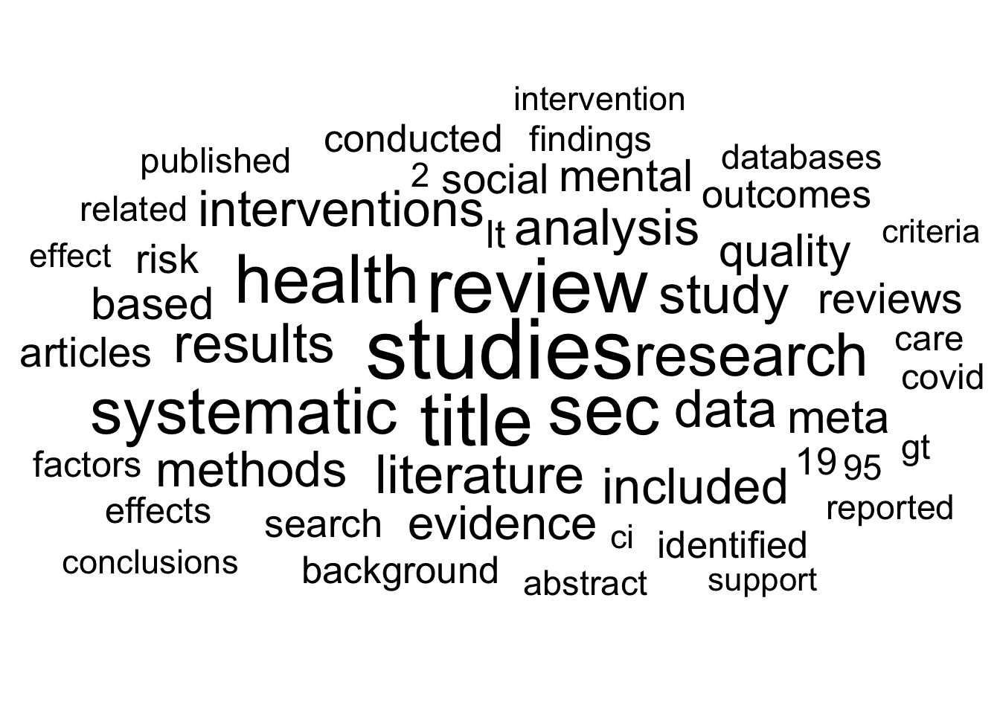

if (!require("pacman")) install.packages("pacman")
pacman::p_load(
here, qs, # file management
magrittr, janitor, # data wrangling
easystats, sjmisc, # data analysis
gt, gtExtras, # table visualization
ggpubr, ggwordcloud, # visualization
tidytext, widyr, # text analysis
openalexR,
tidyverse # load last to avoid masking issues
)Text processing with R
Session 08 - Exercise
 Link to source file
Link to source file
Ziel der Anwendung: Textanalyse in R kennenlernen
- Auffrischung der Grundkenntnisse im Umgang mit R, tidyverse und ggplot2
- Typische Schritte der Textanalyse mit
tidytextkennenlernen, von der Tokenisierung bis zur Visualisierung.
Background
Todays’s data basis: OpenAlex
Via API bzw. openalexR (Aria et al. 2024) gesammelte “works” der Datenbank OpenAlex mit Bezug zu Literaturriews in den Sozialwissenschaften zwischen 2013 und 2023
Detaillierte Informationen und Ergebnisse zur Suchquery finden Sie hier.
Preparation
Wichtige Information
- Bitte stellen Sie sicher, dass Sie das jeweilige R-Studio Projekt zur Übung geöffnet haben. Nur so funktionieren alle Dependencies korrekt.
- Um den einwandfreien Ablauf der Übung zu gewährleisten, wird für die Aufgaben auf eine eigenständige Datenerhebung verzichtet und ein Übungsdatensatz zu verfügung gestelt.
Packages
Import und Vorverarbeitung der Daten
# Import from local
review_works <- qs::qread(here("data/exercise-07/openalex-review_works-2013_2023.qs"))
# Create correct data
review_works_correct <- review_works %>%
mutate(
# Create additional factor variables
publication_year_fct = as.factor(publication_year),
type_fct = as.factor(type)
)🛠️ Praktische Anwendung
Achtung, bitte lesen!
- Bevor Sie mit der Arbeit an den folgenden 📋 Exercises beginnen, stellen Sie bitte sicher, dass Sie alle Chunks des Abschnitts Preparation gerendert haben. Das können Sie tun, indem Sie den “Run all chunks above”-Knopf
 des nächsten Chunks benutzen.
des nächsten Chunks benutzen. - Bei Fragen zum Code lohnt sich ein Blick in den Showcase (.qmd oder .html). Beim Showcase handelt es sich um eine kompakte Darstellung des in der Präsentation verwenden R-Codes. Sie können das Showcase also nutzen, um sich die Code-Bausteine anzusehen, die für die R-Outputs auf den Slides benutzt wurden.
📋 Exercise 1: Neues Subsample
Ziel der Aufgabe
- Erstellung eines neuen Datensatzes
review_subsample_new, der sich auf englischsprachig Bücher bzw. Buchrartikel beschränkt.
- Erstellen Sie einen neuen Datensatz
review_subsample_new- Basierend auf dem Datensatzes
review_works_correct:- Nutzen Sie die
filter()-Funktion, um- nur englischsprachige (
language), - Bücher und Buchkapitel (
type) herauszufiltern.
- nur englischsprachige (
- Speichern Sie diese Umwandlung in einem neuen Datensatz mit dem Namen
review_subsample_new
- Nutzen Sie die
- Basierend auf dem Datensatzes
- Überprüfen Sie die Transformation mit Hilfe der
glimpse()-Funktion. - ✍️ Notieren Sie, wie viele Artikel im neuen Subsample enthalten sind.
Lösung anzeigen
# Erstellung Subsample
review_subsample_new <- review_works_correct %>%
# Eingrenzung: Sprache und Typ
filter(language == "en") %>%
filter(type == "preprint")
# Überprüfung
review_subsample_new %>% glimpseRows: 3,547
Columns: 41
$ id <chr> "https://openalex.org/W4236476849", "https…
$ title <chr> "The PRISMA 2020 statement: an updated gui…
$ display_name <chr> "The PRISMA 2020 statement: an updated gui…
$ author <list> [<data.frame[26 x 12]>], [<data.frame[3 x…
$ ab <chr> "Background: The Preferred Reporting Items…
$ publication_date <chr> "2020-09-14", "2019-07-01", "2017-04-01", …
$ relevance_score <dbl> 584.98030, 253.79811, 214.51546, 199.14885…
$ so <chr> NA, "Technological forecasting & social ch…
$ so_id <chr> NA, "https://openalex.org/S39307421", "htt…
$ host_organization <chr> NA, "Elsevier BV", "Elsevier BV", "Faculty…
$ issn_l <chr> NA, "0040-1625", "0959-6526", "2046-1402",…
$ url <chr> "https://doi.org/10.31222/osf.io/v7gm2", "…
$ pdf_url <chr> "https://osf.io/v7gm2/download", NA, NA, "…
$ license <chr> NA, NA, NA, "cc-by", NA, NA, "cc-by", NA, …
$ version <chr> "submittedVersion", NA, NA, "publishedVers…
$ first_page <chr> NA, "251", "1278", "588", "281", "113113",…
$ last_page <chr> NA, "269", "1302", "588", "312", "113113",…
$ volume <chr> NA, "144", "149", "6", "32", "125", "6", N…
$ issue <chr> NA, NA, NA, NA, "3-4", NA, NA, NA, NA, NA,…
$ is_oa <lgl> TRUE, FALSE, FALSE, TRUE, FALSE, FALSE, TR…
$ is_oa_anywhere <lgl> TRUE, FALSE, FALSE, TRUE, FALSE, FALSE, TR…
$ oa_status <chr> "green", "closed", "closed", "gold", "clos…
$ oa_url <chr> "https://osf.io/v7gm2/download", NA, NA, "…
$ any_repository_has_fulltext <lgl> TRUE, FALSE, FALSE, TRUE, FALSE, FALSE, TR…
$ language <chr> "en", "en", "en", "en", "en", "en", "en", …
$ grants <list> NA, NA, <"https://openalex.org/F432032109…
$ cited_by_count <int> 3320, 222, 153, 190, 105, 140, 132, 57, 95…
$ counts_by_year <list> [<data.frame[5 x 2]>], [<data.frame[7 x 2…
$ publication_year <int> 2020, 2019, 2017, 2017, 2019, 2019, 2017, …
$ cited_by_api_url <chr> "https://api.openalex.org/works?filter=cit…
$ ids <list> <"https://openalex.org/W4236476849", "htt…
$ doi <chr> "https://doi.org/10.31222/osf.io/v7gm2", "…
$ type <chr> "preprint", "preprint", "preprint", "prepr…
$ referenced_works <list> <"https://openalex.org/W2022190222", "htt…
$ related_works <list> <"https://openalex.org/W2921208823", "htt…
$ is_paratext <lgl> FALSE, FALSE, FALSE, FALSE, FALSE, FALSE, …
$ is_retracted <lgl> FALSE, FALSE, FALSE, FALSE, FALSE, FALSE, …
$ concepts <list> [<data.frame[20 x 5]>], [<data.frame[20 x…
$ topics <list> [<tbl_df[4 x 5]>], [<tbl_df[12 x 5]>], [<…
$ publication_year_fct <fct> 2020, 2019, 2017, 2017, 2019, 2019, 2017, …
$ type_fct <fct> preprint, preprint, preprint, preprint, pr…Lösung anzeigen
# Notiz:
# Subsample enthält 3547 Einträge📋 Exercise 2: Umwandlung zu ‘tidy text’
- Erstellen Sie einen neuen Datensatz
subsample_new_tidy,- Basierend auf dem Datensatz
review_subsample_new, mit folgenden Schritten:- Tokenisierung der Abstracts (
ab) mit der Funktionunnest_tokens. - Ausschluss von Stoppwörter mit
filterundstopwords$wordsheraus. - Speichern Sie diese Umwandlung, indem Sie einen neuen Datensatz mit dem Namen
subsample_new_tidyerstellen.
- Tokenisierung der Abstracts (
- Basierend auf dem Datensatz
- Prüfen Sie, ob die Umwandlung erfolgreich war (z.B. mit der Funktion
glimpse()) - ✍️ Notieren Sie, wie viele Token im neuen Datensatz
subsample_new_tidyenthalten sind.
Lösung anzeigen
# Erstellung des neuen Datensatzes `subsample_new_tidy`
subsample_new_tidy <- review_subsample_new %>%
tidytext::unnest_tokens("text", ab) %>%
filter(!text %in% tidytext::stop_words$word)
# Überprüfung
subsample_new_tidy %>% print()# A tibble: 498,535 × 41
id title display_name author publication_date relevance_score so so_id
<chr> <chr> <chr> <list> <chr> <dbl> <chr> <chr>
1 https… The … The PRISMA … <df> 2020-09-14 585. <NA> <NA>
2 https… The … The PRISMA … <df> 2020-09-14 585. <NA> <NA>
3 https… The … The PRISMA … <df> 2020-09-14 585. <NA> <NA>
4 https… The … The PRISMA … <df> 2020-09-14 585. <NA> <NA>
5 https… The … The PRISMA … <df> 2020-09-14 585. <NA> <NA>
6 https… The … The PRISMA … <df> 2020-09-14 585. <NA> <NA>
7 https… The … The PRISMA … <df> 2020-09-14 585. <NA> <NA>
8 https… The … The PRISMA … <df> 2020-09-14 585. <NA> <NA>
9 https… The … The PRISMA … <df> 2020-09-14 585. <NA> <NA>
10 https… The … The PRISMA … <df> 2020-09-14 585. <NA> <NA>
# ℹ 498,525 more rows
# ℹ 33 more variables: host_organization <chr>, issn_l <chr>, url <chr>,
# pdf_url <chr>, license <chr>, version <chr>, first_page <chr>,
# last_page <chr>, volume <chr>, issue <chr>, is_oa <lgl>,
# is_oa_anywhere <lgl>, oa_status <chr>, oa_url <chr>,
# any_repository_has_fulltext <lgl>, language <chr>, grants <list>,
# cited_by_count <int>, counts_by_year <list>, publication_year <int>, …Lösung anzeigen
# Notiz:
# Der neue Datensatz enthält 498535 Token. 📋 Exercise 3: Auswertung der Token
- Erstellen Sie einen neuen Datensatz
subsample_new_summarized,- Fassen Sie auf der Grundlage des Datensatzes
subsample_new_tidydie Häufigkeit der einzelnen Token zusammen, indem Sie die Funktioncount()auf die Variabletextanwenden. Verwenden Sie das Argumentsort = TRUE, um den Datensatz nach absteigender Häufigkeit der Token zu sortieren. - Speichern Sie diese Transformation, indem Sie einen neuen Datensatz mit dem Namen
subsample_new_summarizederstellen.
- Fassen Sie auf der Grundlage des Datensatzes
- Prüfen Sie, ob die Umwandlung erfolgreich war, indem Sie die Funktion
print()verwenden.- Verwenden Sie das Argument
n = 50, um die 50 wichtigsten Token anzuzeigen (nur möglich, wenn das Argumentsort = TRUEbei der Ausführung der Funktioncount()verwendet wurde)
- Verwenden Sie das Argument
- Verteilung der Token prüfen
- Verwenden Sie die Funktion
datawizard::describe_distribution(), um verschiedene Verteilungsparameter des neuen Datensatzes zu überprüfen - ✍️ Notieren Sie, wie viele Token ein Abstract durchschnittlich enthält.
- Verwenden Sie die Funktion
- Optional: Ergebnisse mit einer Wortwolke überprüfen
- Basierend auf dem sortierten Datensatz
subsample_new_summarized- Auswahl der 50 häufigsten Token mit Hilfe der Funktion
top_n() - Erstellen Sie eine
ggplot()-Basis mitlabel = textundsize = nalsaes()und - Benutze ggwordcloud::geom_text_wordclout() um die Wortwolke zu erstellen.
- Verwenden Sie scale_size_are(), um die Skalierung der Wortwolke zu übernehmen.
- Verwenden Sie
theme_minimal()für eine saubere Visualisierung.
- Auswahl der 50 häufigsten Token mit Hilfe der Funktion
- Basierend auf dem sortierten Datensatz
Lösung anzeigen
# Erstellung des neuen Datensatzes `subsample_new_summmarized`
subsample_new_summmarized <- subsample_new_tidy %>%
count(text, sort = TRUE)
# Preview Top 50 token
subsample_new_summmarized %>%
print(n = 50)# A tibble: 22,001 × 2
text n
<chr> <int>
1 studies 7115
2 review 5857
3 title 5223
4 sec 5133
5 health 4591
6 systematic 4197
7 research 3597
8 results 2981
9 study 2949
10 literature 2881
11 data 2764
12 analysis 2600
13 interventions 2532
14 included 2491
15 methods 2469
16 evidence 2229
17 meta 2122
18 quality 2069
19 based 2017
20 mental 1998
21 reviews 1812
22 social 1752
23 articles 1734
24 risk 1653
25 search 1540
26 outcomes 1515
27 conducted 1498
28 lt 1481
29 background 1434
30 19 1426
31 identified 1420
32 factors 1307
33 effects 1300
34 covid 1279
35 findings 1254
36 care 1248
37 95 1247
38 gt 1245
39 published 1241
40 related 1234
41 abstract 1214
42 databases 1211
43 reported 1191
44 2 1138
45 conclusions 1133
46 effect 1116
47 ci 1111
48 intervention 1110
49 criteria 1077
50 support 1065
# ℹ 21,951 more rowsLösung anzeigen
# Check distribution parameters
subsample_new_summmarized %>%
datawizard::describe_distribution()Variable | Mean | SD | IQR | Range | Skewness | Kurtosis | n | n_Missing
-------------------------------------------------------------------------------------------
n | 22.66 | 136.91 | 7 | [1.00, 7115.00] | 24.15 | 858.87 | 22001 | 0Lösung anzeigen
# Notiz:
# Ein Absatz enthält durchschnittlich 22 Token.
# Optional: Check results with a wordcloud
subsample_new_summmarized %>%
top_n(50) %>%
ggplot(aes(label = text, size = n)) +
ggwordcloud::geom_text_wordcloud() +
scale_size_area(max_size = 15) +
theme_minimal()
📋 Exercise 4: Wortbeziehungen im Fokus
4.1 Couting word pairs
- Zählen von häufigen Wortpaaren
- Zählen Sie auf der Grundlage des Datensatzes
subsample_new_tidyWortpaare mitwidyr::pairwise_count(), mit den Argumentenitem = text,feature = idundsort = TRUE. - Speichern Sie diese Transformation, indem Sie einen neuen Datensatz mit dem Namen
subsample_new_word_pairserstellen.
- Zählen Sie auf der Grundlage des Datensatzes
- Prüfen Sie, ob die Umwandlung erfolgreich war, indem Sie die Funktion
print()verwenden.- Verwenden Sie das Argument
n = 50, um die 50 wichtigsten Token anzuzeigen (nur möglich, wenn bei der Ausführung der Funktioncount()das Argumentsort = TRUEverwendet wurde)
- Verwenden Sie das Argument
Lösung anzeigen
# Couting word pairs among sections
subsample_new_word_pairs <- subsample_new_tidy %>%
widyr::pairwise_count(
item = text,
feature = id,
sort = TRUE)
# Check
subsample_new_word_pairs %>% print(n = 50)# A tibble: 12,662,794 × 3
item1 item2 n
<chr> <chr> <dbl>
1 review systematic 2068
2 systematic review 2068
3 studies review 1909
4 review studies 1909
5 studies systematic 1668
6 results review 1668
7 review results 1668
8 systematic studies 1668
9 studies results 1502
10 results studies 1502
11 research review 1483
12 review research 1483
13 results systematic 1478
14 systematic results 1478
15 literature review 1471
16 review literature 1471
17 methods review 1453
18 review methods 1453
19 methods results 1387
20 results methods 1387
21 study review 1336
22 review study 1336
23 methods systematic 1320
24 systematic methods 1320
25 studies methods 1306
26 methods studies 1306
27 included review 1236
28 review included 1236
29 review background 1227
30 background review 1227
31 methods background 1224
32 background methods 1224
33 research systematic 1216
34 systematic research 1216
35 results background 1204
36 background results 1204
37 included studies 1198
38 studies included 1198
39 study studies 1197
40 studies study 1197
41 study systematic 1195
42 systematic study 1195
43 research studies 1178
44 studies research 1178
45 health review 1153
46 review health 1153
47 analysis review 1152
48 review analysis 1152
49 studies background 1148
50 background studies 1148
# ℹ 12,662,744 more rows4.2 Pairwise correlation
- Ermittlung der paarweisen Korrelation
- Basierend auf dem Datensatz
subsample_new_tidy, - gruppieren Sie die Daten mit der Funktion
group_by()nach der Variabletextund - verwenden Sie
filter(n() >= X), um nur Token zu verwenden, die mindestens in einer bestimmte Anzahl (X) vorkommen; Sie können fürXeinen Wert Ihrer Wahl wählen, ich würde jedoch dringend empfehlen, einX > 100zu wählen, da die folgende Funktion sonst möglicherweise nicht in der Lage ist, die Berechnung durchzuführen. - Erstellen Sie Wortkorrelationen mit
widyr::pairwise_cor(), mit den Argumentenitem = text,feature = idundsort = TRUE. - Speichern Sie diese Transformation, indem Sie einen neuen Datensatz mit dem Namen
subsample_new_correrstellen.
- Basierend auf dem Datensatz
- Prüfen Sie die Paare mit der höchsten Korrelation mit der Funktion
print()..
Lösung anzeigen
# Getting pairwise correlation
subsample_new_corr <- subsample_new_tidy %>%
group_by(text) %>%
filter(n() >= 250) %>%
pairwise_cor(text, id, sort = TRUE)
# Check pairs with highest correlation
subsample_new_corr %>% print(n = 50)# A tibble: 131,406 × 3
item1 item2 correlation
<chr> <chr> <dbl>
1 sec title 0.935
2 title sec 0.935
3 ci 95 0.881
4 95 ci 0.881
5 19 covid 0.844
6 covid 19 0.844
7 items preferred 0.835
8 preferred items 0.835
9 pandemic covid 0.812
10 covid pandemic 0.812
11 vaccination vaccine 0.796
12 vaccine vaccination 0.796
13 trials controlled 0.763
14 controlled trials 0.763
15 web science 0.755
16 science web 0.755
17 sec objective 0.715
18 objective sec 0.715
19 srs sr 0.710
20 sr srs 0.710
21 randomized controlled 0.708
22 controlled randomized 0.708
23 pandemic 19 0.695
24 19 pandemic 0.695
25 objective title 0.669
26 title objective 0.669
27 gt lt 0.662
28 lt gt 0.662
29 trials randomized 0.658
30 randomized trials 0.658
31 depression anxiety 0.650
32 anxiety depression 0.650
33 bold ns4 0.636
34 ns4 bold 0.636
35 methods background 0.613
36 background methods 0.613
37 inclusion criteria 0.607
38 criteria inclusion 0.607
39 reporting preferred 0.599
40 preferred reporting 0.599
41 items reporting 0.599
42 reporting items 0.599
43 peer reviewed 0.592
44 reviewed peer 0.592
45 1 2 0.585
46 2 1 0.585
47 sec conclusions 0.577
48 conclusions sec 0.577
49 registration prospero 0.574
50 prospero registration 0.574
# ℹ 131,356 more rows📋 Exercise 5: Inhaltlicher Vergleich
- Vergleichen Sie die Ergebnisse der Übung mit den Auswertungen der Folien:
- Wie unterscheiden sich die Ergebnisse?
- Würden Sie die Bücher bzw. Buchabschnitte mit in die Untersuchung integrieren?
References
Aria, Massimo, Trang Le, Corrado Cuccurullo, Alessandra Belfiore, and June Choe. 2024. “openalexR: An R-Tool for Collecting Bibliometric Data from OpenAlex.” The R Journal 15 (4): 167–80. https://doi.org/10.32614/rj-2023-089.